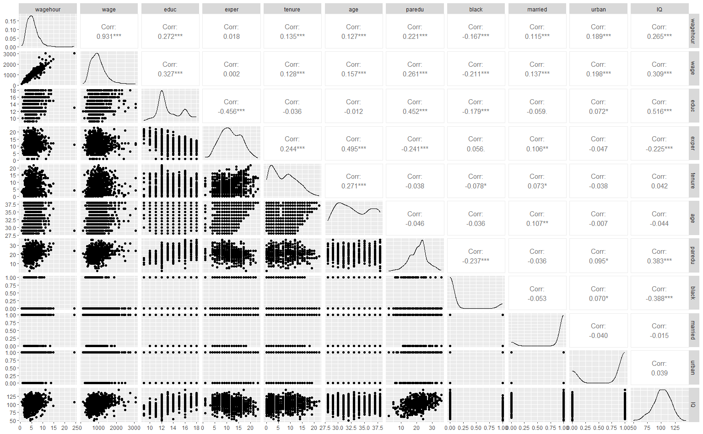
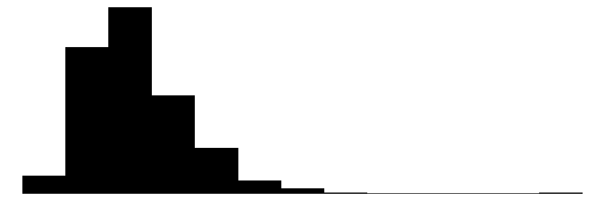
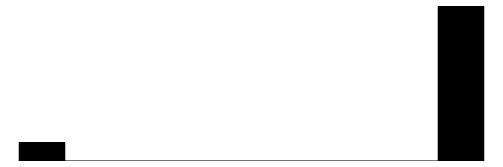
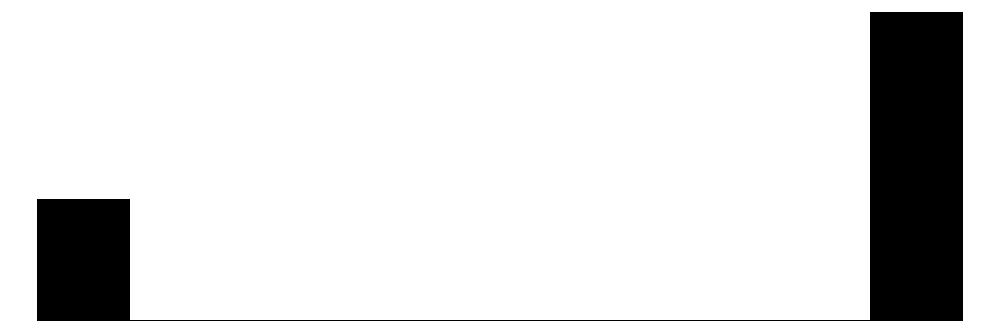
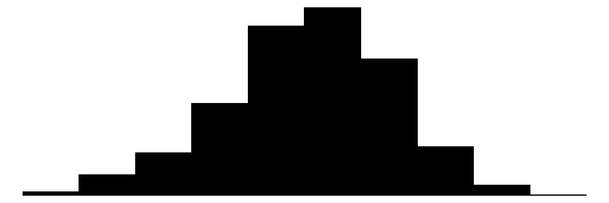

library(tidyverse)
library(alr4)
library(GGally)
library(parameters)
library(performance)
library(see)
library(car)
library(broom)
library(modelsummary)
library(texreg)
library(correlation)
library(patchwork)
library(lmtest)
library(sandwich)
library(clubSandwich)
knitr::opts_chunk$set(
fig.align = "center",
fig.width = 16,
fig.asp = 0.618,
fig.retina = 1,
out.width = "100%",
message = FALSE,
warning = FALSE,
echo = TRUE
)AE05-01 OVB and wage equation
Setup
Goals:
- Demonstrate the effect of the OVB;
- Make an educated guess about the effect of OVB;
Data used here comes form: M. Blackburn and D. Neumark (1992), “Unobserved Ability, Efficiency Wages, and Interindustry Wage Differentials,” Quarterly Journal of Economics 107, 1421-1436.
Exercise 1. In class
1.1 Load data
Check help fo the data frame ?wooldridge::wage2.
dta <-
wooldridge::wage2 %>%
as_tibble()1.2 Compute
- total amount of parents education
pareduas a sum of years of their education - wage per hour
wagehouras wage divided by average daily hours and 21 working days month. assume that each week has 5 working days. - select
wage,wagehour,educ,exper,tenure,age,pareduandblack,married,urban, andIQ.
# dta1 <-
# ________ %>%
# ________(paredu = ________,
# wagehour = ________) %>%
# select(________)1.3 Built pairs plot and descriptive statistics
# library(GGally)
# ________(dta1)# library(modelsummary)
# dta1 %>% ________()1.4 Short regression: wage on all but IQ
Why is IQ important?
# fit_s <- lm()1.5 Hypothesis the bias
1.6 Auxiliary regression: IQ on all but wage
# fit_aux <- lm()1.7 Long regression: wage on all including IQ
# fit_l <- lm()1.8.1 Compare all models together with parameters and performance
- use function
compare_parametersfromparameters - specify style of standard errors and p-values in
style = "se_p" - provide models names in argument
column_names = c(...)
# library(_____)
# _____________________(
# _____, _____, _____,
# _____,
# _____ = c("short", _____, _____)
# )Compare goodness of fit measures using performance::compare_performance
# library(_____)
# _____(_____, _____, _____)1.8.2 Compare all models together with modelsummary::modelsummary
you need create an object
all_modswith all three models in a list using functionlist(...);in the list, provide names for each model. For example:
list(`Model name` = fit_s)Create a list below
# all_mods <- list(
# `Short (dep: wage)` = fit_s,
# `_____` = _____,
# _____ = _____
# )Display the list structure:
# str(all_mods, max.level = 1)Summarize models with modelsummary::modelsummary
# library(_____)
# _____(all_mods)1.9 Compute the omitted variables bias
# coef(fit_s)[["educ"]] - coef(fit_l)[["educ"]]
# coef(fit_aux)[["educ"]] * coef(fit_l)[["IQ"]]1.10 Interpret the effect of education
Exercise 2. Homework
2.1 Check the linearity assumption in the long model
2.1.1 Visually
?check_model
# _____(_____, check = "linearity")2.1.2 Using Tukey test
?car::residualPlots
# library(_____)
# _____(_____)2.2 Improve long model:
- create object
fil_l2; - use
wagehouras a dependent variable; - add
age^2to the model by includingI(age^2)to the regression equation
# fit_l2 <- lm(_____)2.2.1 Check the linearity assumption again
# _____(_____, check = "linearity")
# _____(fit_l2)2.2 Check the multicollinearity assumption in the long model
?car::vif
# _____(_____)2.3 Conclude on the final functional form
2.4 Check the residual homogeneity
2.4.1 Visually
# _____(_____, _____ = "homogeneity")2.4.1 statistical test
lmtest::bptest
# library(_____)
# bptest(_____)2.5 Check the robustness of regression again sample selectivity
- Inspect closely the descriptive statistics on the subject of missing observations.
- Why regression has fewer observations than the data?
- Built regression for the complete data set.
- Compare all estimates.
- Discuss bias caused by OVB if present.
# fit_l3 <- lm(_____)
# _____(fit_l, fit_l2, fit_l3, style = "se_p")2.6 Construct predicted values plot for age variable in model fit_l2
?ggeffects::ggpredict
# library(_____)
# _____(_____, terms = "age") %>% plot()2.7 Interpret the results
Solutions Ex. 1
Code
## 1 Load data
dta <-
wooldridge::wage2 %>%
as_tibble()
## 2 Compute
dta1 <-
dta %>%
mutate(paredu = meduc + feduc,
wagehour = wage / (hours / 5 * 21)) %>%
select(wagehour, wage, educ, exper, tenure,
age, paredu, black, married, urban, IQ)
## 3 Built pairs plot and descriptive statistics
library(GGally)
ggpairs(dta1)
Code
dta1 %>% datasummary_skim()| Unique | Missing Pct. | Mean | SD | Min | Median | Max | Histogram | |
|---|---|---|---|---|---|---|---|---|
| wagehour | 602 | 0 | 5.3 | 2.4 | 0.5 | 5.0 | 24.4 |  |
| wage | 449 | 0 | 957.9 | 404.4 | 115.0 | 905.0 | 3078.0 |  |
| educ | 10 | 0 | 13.5 | 2.2 | 9.0 | 12.0 | 18.0 |  |
| exper | 22 | 0 | 11.6 | 4.4 | 1.0 | 11.0 | 23.0 | |
| tenure | 23 | 0 | 7.2 | 5.1 | 0.0 | 7.0 | 22.0 | |
| age | 11 | 0 | 33.1 | 3.1 | 28.0 | 33.0 | 38.0 | |
| paredu | 34 | 23 | 21.1 | 5.5 | 2.0 | 22.0 | 36.0 | |
| black | 2 | 0 | 0.1 | 0.3 | 0.0 | 0.0 | 1.0 |  |
| married | 2 | 0 | 0.9 | 0.3 | 0.0 | 1.0 | 1.0 |  |
| urban | 2 | 0 | 0.7 | 0.5 | 0.0 | 1.0 | 1.0 |  |
| IQ | 80 | 0 | 101.3 | 15.1 | 50.0 | 102.0 | 145.0 |  |
Code
## 1.4 Short regression: `wage)` on all but `IQ`
fit_s <- lm(
wage ~ educ + exper + tenure + age +
paredu + black + married,
data = dta1
)
## 1.6 Auxiliary regression: `IQ` on all but `log(wagehour)`
fit_aux <- lm(
IQ ~ educ + exper + tenure + age +
paredu + black + married,
data = dta1
)
## 1.7 Long regression: `wage)` on all including `IQ`
fit_l <- lm(
wage ~ educ + exper + tenure + age +
paredu + black + married + IQ,
data = dta1
)
## 1.8.1 Compare all models together with `parameters` and `performance`
library(parameters)
compare_parameters(
fit_s, fit_aux, fit_l,
style = "se_p",
column_names = c("short", "auxilary", "long"))Parameter | short | auxilary | long
------------------------------------------------------------------------------------------------
(Intercept) | -647.66 (-992.39, -302.94) | 62.27 ( 51.34, 73.21) | -896.14 (-1267.08, -525.21)
educ | 55.61 ( 40.13, 71.10) | 3.14 ( 2.65, 3.63) | 43.09 ( 26.12, 60.07)
exper | 11.99 ( 3.26, 20.73) | 0.17 ( -0.11, 0.45) | 11.32 ( 2.64, 19.99)
tenure | 4.07 ( -1.67, 9.80) | 0.12 ( -0.06, 0.30) | 3.59 ( -2.11, 9.29)
age | 9.95 ( -0.79, 20.69) | -0.37 ( -0.72, -0.03) | 11.44 ( 0.75, 22.14)
paredu | 10.90 ( 5.21, 16.59) | 0.32 ( 0.14, 0.51) | 9.60 ( 3.90, 15.30)
black | -105.81 (-203.72, -7.90) | -12.76 (-15.86, -9.65) | -54.91 ( -156.43, 46.61)
married | 171.79 ( 85.28, 258.29) | 0.94 ( -1.80, 3.69) | 168.02 ( 82.12, 253.92)
IQ | | | 3.99 ( 1.69, 6.29)
------------------------------------------------------------------------------------------------
Observations | 722 | 722 | 722Code
## Compare goodness of fit measures using `performance::compare_performance`
library(performance)
compare_performance(fit_s, fit_aux, fit_l)# Comparison of Model Performance Indices
Name | Model | AIC (weights) | AICc (weights) | BIC (weights) | R2
-----------------------------------------------------------------------------
fit_s | lm | 10595.5 (<.001) | 10595.7 (<.001) | 10636.7 (<.001) | 0.189
fit_aux | lm | 5612.6 (>.999) | 5612.9 (>.999) | 5653.9 (>.999) | 0.377
fit_l | lm | 10585.8 (<.001) | 10586.1 (<.001) | 10631.7 (<.001) | 0.202
Name | R2 (adj.) | RMSE | Sigma
---------------------------------------
fit_s | 0.181 | 367.307 | 369.359
fit_aux | 0.371 | 11.652 | 11.717
fit_l | 0.193 | 364.352 | 366.645Code
## 1.8.2 Compare all models together with `modelsummary::modelsummary`
all_mods <- list(
`Short (dep: wage)` = fit_s,
`Auxilary (dep: IQ)` = fit_aux,
`Long (dep: wage)` = fit_l
)
# Display the list structure:
str(all_mods, max.level = 1)List of 3
$ Short (dep: wage) :List of 13
..- attr(*, "class")= chr "lm"
$ Auxilary (dep: IQ):List of 13
..- attr(*, "class")= chr "lm"
$ Long (dep: wage) :List of 13
..- attr(*, "class")= chr "lm"Code
# Summarise the models
library(modelsummary)
modelsummary(all_mods)| Short (dep: wage) | Auxilary (dep: IQ) | Long (dep: wage) | |
|---|---|---|---|
| (Intercept) | -647.664 | 62.272 | -896.143 |
| (175.586) | (5.570) | (188.936) | |
| educ | 55.612 | 3.137 | 43.094 |
| (7.886) | (0.250) | (8.648) | |
| exper | 11.992 | 0.170 | 11.316 |
| (4.448) | (0.141) | (4.420) | |
| tenure | 4.068 | 0.120 | 3.589 |
| (2.922) | (0.093) | (2.903) | |
| age | 9.947 | -0.375 | 11.443 |
| (5.470) | (0.174) | (5.447) | |
| paredu | 10.896 | 0.325 | 9.601 |
| (2.897) | (0.092) | (2.901) | |
| black | -105.810 | -12.756 | -54.908 |
| (49.871) | (1.582) | (51.709) | |
| married | 171.785 | 0.943 | 168.021 |
| (44.064) | (1.398) | (43.754) | |
| IQ | 3.990 | ||
| (1.171) | |||
| Num.Obs. | 722 | 722 | 722 |
| R2 | 0.189 | 0.377 | 0.202 |
| R2 Adj. | 0.181 | 0.371 | 0.193 |
| AIC | 10595.5 | 5612.6 | 10585.8 |
| BIC | 10636.7 | 5653.9 | 10631.7 |
| Log.Lik. | -5288.748 | -2797.325 | -5282.917 |
| F | 23.735 | 61.708 | 22.528 |
| RMSE | 367.31 | 11.65 | 364.35 |
Code
## 1.9 Compute the omited variables bias
coef(fit_s)[["educ"]] - coef(fit_l)[["educ"]][1] 12.51822Code
coef(fit_aux)[["educ"]] * coef(fit_l)[["IQ"]][1] 12.51822Solutions Ex. 2
Code
## 2.1 Check the linearity assumption in the long model
### 2.1.1 Visually
plot(fit_l, which = 1)
check_model(fit_l, check = "linearity")
### 2.1.2 Using Tukey test
library(car)
residualPlots(fit_l)
## 2.2 Improve long model:
fit_l2 <- lm(
wagehour ~ educ + exper + tenure + age + I(age^2) +
paredu + black + married + IQ,
data = dta1
)
### 2.2.1 Check the linearity assumption again
check_model(fit_l2, check = "linearity")
library(car)
residualPlots(fit_l2)
## 2.2 Check the multicollinearity assumption in the long model
vif(fit_l2)
## 2.4 Check the residual homogeneity
### 2.4.1 Visually
check_model(fit_l2, check = "homogeneity")
### 2.4.1 statistical test
library(lmtest)
bptest(fit_l2)
## 2.5 Check the robustnes of regression agains sample selectivity
nrow(dta1)
df.residual(fit_l2)
fit_l3 <- lm(
wagehour ~ educ + exper + tenure + age + I(age^2) +
black + married + IQ,
data = dta1
)
compare_parameters(fit_l, fit_l2, fit_l3, style = "se_p")
## 2.6 Construct prediced values plot for age variable in model `fit_l2`
library(ggeffects)
ggpredict(fit_l2, terms = "age") %>% plot()